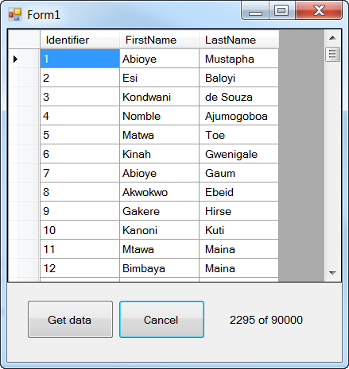

Practical Asynchronous Programming for VS2012 or higher
Description
This article provides practical examples in C# and VB.NET to use Task-based Asynchronous Pattern (TAP) available beginning with Visual Studio 2012. There is a good deal of information out there already on TAP so rather than repeat this do a search on the web, for examples they are not practical to the developer who wants to load large amounts of data while keeping the user interface responsive along with providing the capability to cancel these operations. The most common examples are downloading something from a web site which I have never needed this in any of my solutions and would guess the majority of developers are the same.
Practical examples are those that read data using a managed data provider such as OleDb or SqlClient for instance simply because most developers are working SQL-Server or MS-Access. Of course there are others such as MySQL where these should have methods to accomplish what I am doing in these examples.
There are two projects, one in C# and one in VB.NET which share a C# backend class project to access data using TAP. Another VB.NET forms project which uses the same logic as done in the prior projects but without a class project
yet that can be done too. There is a VB.NET example for reading data in a splash screen which depends on delegates in the splash form plus using a Iterator function (returning data via Yield) to retrieve data using synchronous data access yet the splash screen
stays responsive as all splash screens run in a separate thread then the main form.
Rather than getting into each piece I believe you can run the projects, see what they do then go back and review the code to learn from. When running a demo project make sure to move the form around to see that it does response, press cancel to see what happens too.
Note: I have used Thread.Sleep in several parts of the solution. For your projects please use the following. See a demostration of Sleep vs. Delay see Thread.Sleep vs.Task.Delay which has a examples of both in C#, same holds true for VB.NET.
await Task.Delay(n, tokenSource.Token);
await Task.Delay(n, tokenSource.Token);
Lastly, I keep things basic so you can learn from these projects so keep that in mind. If there is something missing then once you understand the code tweak it, make the code yours.

Imports System.Threading Imports System.Data.Common Public Class DataOperations Private Builder As New OleDb.OleDbConnectionStringBuilder Private theToken As New CancellationTokenSource ''' <summary> ''' Record count for Customers table ''' </summary> ''' <value></value> ''' <returns></returns> ''' <remarks></remarks> Public Property RecordCount As Integer ''' <summary> ''' Used for cancel operations ''' </summary> ''' <value></value> ''' <returns></returns> ''' <remarks></remarks> Public Property Token As CancellationToken ''' <summary> ''' DataTable containing customer data ''' </summary> ''' <value></value> ''' <returns></returns> ''' <remarks></remarks> Public Property DataTable As DataTable ''' <summary> ''' Calling for used for invoke ''' </summary> ''' <value></value> ''' <returns></returns> ''' <remarks></remarks> Public Property Caller As Form ''' <summary> ''' Label to show status while running ''' </summary> ''' <value></value> ''' <returns></returns> ''' <remarks></remarks> Public Property Label As Label Public Sub New() DataTable = New DataTable With {.TableName = "Customers"} DataTable.Columns.Add(New DataColumn With {.ColumnName = "Identifier", .DataType = GetType(Int32)}) DataTable.Columns.Add(New DataColumn With {.ColumnName = "CompanyName", .DataType = GetType(String)}) DataTable.Columns.Add(New DataColumn With {.ColumnName = "ContactName", .DataType = GetType(String)}) DataTable.Columns.Add(New DataColumn With {.ColumnName = "ContactTitle", .DataType = GetType(String)}) DataTable.Columns.Add(New DataColumn With {.ColumnName = "Country", .DataType = GetType(String)}) Builder.Provider = "Microsoft.ACE.OLEDB.12.0" Builder.DataSource = IO.Path.Combine(AppDomain.CurrentDomain.BaseDirectory, "Customers.accdb") GetRecordCount() End Sub ''' <summary> ''' Code to get data ''' </summary> ''' <param name="ct"></param> ''' <returns></returns> ''' <remarks></remarks> Public Async Function GetDataAsync(ByVal ct As CancellationToken) As Task Dim CurrentRecord As Integer = 1 Using cn As New OleDbConnection(Builder.ConnectionString) Using cmd As New OleDbCommand( "SELECT Identifier, CompanyName, ContactName, ContactTitle, Country FROM Customers", cn) Await cn.OpenAsync() Using reader As DbDataReader = Await cmd.ExecuteReaderAsync() Do While Await reader.ReadAsync() If ct.IsCancellationRequested Then Exit Do End If Dim PrimaryKey As Integer = Await reader.GetFieldValueAsync(Of Integer)(0) Dim ItemArray() As Object = { PrimaryKey, Await reader.GetFieldValueAsync(Of String)(1), Await reader.GetFieldValueAsync(Of String)(2), Await reader.GetFieldValueAsync(Of String)(3), Await reader.GetFieldValueAsync(Of String)(4) } Caller.Invoke( New EventHandler( Sub(sender As Object, e As EventArgs) DataTable.Rows.Add(ItemArray) If Label IsNot Nothing Then If Not Label.InvokeRequired Then Label.Text = String.Format("{0} of {1}", CurrentRecord, Me.RecordCount) End If End If End Sub), New Object(1) {ItemArray, Nothing}) CurrentRecord += 1 ' ' Beings we only have a small set of records we will do a delay ' Thread.Sleep(1000) Loop End Using End Using End Using End Function ''' <summary> ''' Get record count in Customers table ''' </summary> ''' <remarks></remarks> Private Sub GetRecordCount() Using cn As New OleDbConnection(Builder.ConnectionString) Using cmd As New OleDbCommand("SELECT Count(Identifier) FROM Customers;", cn) cn.Open() RecordCount = CInt(Fix(cmd.ExecuteScalar())) End Using End Using End Sub End Class
using System; using System.Data; using System.Data.Common; using System.Data.OleDb; using System.IO; using System.Threading; using System.Threading.Tasks; using System.Windows.Forms; namespace DataOperations { public class Work { private OleDbConnectionStringBuilder Builder = new OleDbConnectionStringBuilder(); private CancellationTokenSource cts = new CancellationTokenSource(); public int RecordCount { get; set; } public CancellationToken Token { get; set; } public DataTable dtPeople { get; set; } /// <summary> /// Form who called us /// </summary> public Form Caller { get; set; } /// <summary> /// Label to show how many rows are processed /// </summary> public Label Label { get; set; } public Work() { dtPeople = new DataTable { TableName = "PeopleTable" }; dtPeople.Columns.Add(new DataColumn { ColumnName = "Identifier", DataType = typeof(Int32) }); dtPeople.Columns.Add(new DataColumn { ColumnName = "FirstName", DataType = typeof(string) }); dtPeople.Columns.Add(new DataColumn { ColumnName = "LastName", DataType = typeof(string) }); Builder.Provider = "Microsoft.ACE.OLEDB.12.0"; Builder.DataSource = Path.Combine(AppDomain.CurrentDomain.BaseDirectory, "PeopleDatabase.accdb"); GetRecordCount(); } public async Task GetDataAsync(CancellationToken ct) { int CurrentRecord = 0; using (OleDbConnection cn = new OleDbConnection(Builder.ConnectionString)) { using (OleDbCommand cmd = new OleDbCommand("SELECT Identifier, FirstName, LastName FROM People;", cn)) { await cn.OpenAsync(); using (DbDataReader reader = await cmd.ExecuteReaderAsync()) { while (await reader.ReadAsync()) { if (ct.IsCancellationRequested) { break; } int PrimaryKey = await reader.GetFieldValueAsync<int>(0); Object[] ItemArray = { PrimaryKey, await reader.GetFieldValueAsync<string>(1), await reader.GetFieldValueAsync<string>(2) }; Caller.Invoke(new EventHandler(delegate(object sender, EventArgs e) { dtPeople.Rows.Add(ItemArray); if (Label != null) { if (Label.InvokeRequired == false) { Label.Text = string.Format("{0} of {1}", CurrentRecord, this.RecordCount); } } }), new object[2] { ItemArray, null } ); CurrentRecord += 1; } } } } } private void GetRecordCount() { using (OleDbConnection cn = new OleDbConnection(Builder.ConnectionString)) { using (OleDbCommand cmd = new OleDbCommand("SELECT Count(Identifier) FROM People;", cn)) { cn.Open(); RecordCount = (int)cmd.ExecuteScalar(); } } } } }
Imports System.Threading Imports System.Data.Common Public Class DataOperations Private Builder As New OleDb.OleDbConnectionStringBuilder Private theToken As New CancellationTokenSource ''' <summary> ''' Record count for Customers table ''' </summary> ''' <value></value> ''' <returns></returns> ''' <remarks></remarks> Public Property RecordCount As Integer ''' <summary> ''' Used for cancel operations ''' </summary> ''' <value></value> ''' <returns></returns> ''' <remarks></remarks> Public Property Token As CancellationToken ''' <summary> ''' DataTable containing customer data ''' </summary> ''' <value></value> ''' <returns></returns> ''' <remarks></remarks> Public Property DataTable As DataTable ''' <summary> ''' Calling for used for invoke ''' </summary> ''' <value></value> ''' <returns></returns> ''' <remarks></remarks> Public Property Caller As Form ''' <summary> ''' Label to show status while running ''' </summary> ''' <value></value> ''' <returns></returns> ''' <remarks></remarks> Public Property Label As Label Public Sub New() DataTable = New DataTable With {.TableName = "Customers"} DataTable.Columns.Add(New DataColumn With {.ColumnName = "Identifier", .DataType = GetType(Int32)}) DataTable.Columns.Add(New DataColumn With {.ColumnName = "CompanyName", .DataType = GetType(String)}) DataTable.Columns.Add(New DataColumn With {.ColumnName = "ContactName", .DataType = GetType(String)}) DataTable.Columns.Add(New DataColumn With {.ColumnName = "ContactTitle", .DataType = GetType(String)}) DataTable.Columns.Add(New DataColumn With {.ColumnName = "Country", .DataType = GetType(String)}) Builder.Provider = "Microsoft.ACE.OLEDB.12.0" Builder.DataSource = IO.Path.Combine(AppDomain.CurrentDomain.BaseDirectory, "Customers.accdb") GetRecordCount() End Sub ''' <summary> ''' Code to get data ''' </summary> ''' <param name="ct"></param> ''' <returns></returns> ''' <remarks></remarks> Public Async Function GetDataAsync(ByVal ct As CancellationToken) As Task Dim CurrentRecord As Integer = 1 Using cn As New OleDbConnection(Builder.ConnectionString) Using cmd As New OleDbCommand( "SELECT Identifier, CompanyName, ContactName, ContactTitle, Country FROM Customers", cn) Await cn.OpenAsync() Using reader As DbDataReader = Await cmd.ExecuteReaderAsync() Do While Await reader.ReadAsync() If ct.IsCancellationRequested Then Exit Do End If Dim PrimaryKey As Integer = Await reader.GetFieldValueAsync(Of Integer)(0) Dim ItemArray() As Object = { PrimaryKey, Await reader.GetFieldValueAsync(Of String)(1), Await reader.GetFieldValueAsync(Of String)(2), Await reader.GetFieldValueAsync(Of String)(3), Await reader.GetFieldValueAsync(Of String)(4) } Caller.Invoke( New EventHandler( Sub(sender As Object, e As EventArgs) DataTable.Rows.Add(ItemArray) If Label IsNot Nothing Then If Not Label.InvokeRequired Then Label.Text = String.Format("{0} of {1}", CurrentRecord, Me.RecordCount) End If End If End Sub), New Object(1) {ItemArray, Nothing}) CurrentRecord += 1 ' ' Beings we only have a small set of records we will do a delay ' Thread.Sleep(1000) Loop End Using End Using End Using End Function ''' <summary> ''' Get record count in Customers table ''' </summary> ''' <remarks></remarks> Private Sub GetRecordCount() Using cn As New OleDbConnection(Builder.ConnectionString) Using cmd As New OleDbCommand("SELECT Count(Identifier) FROM Customers;", cn) cn.Open() RecordCount = CInt(Fix(cmd.ExecuteScalar())) End Using End Using End Sub End Class

Update 8/7/2014, noticed that between projects I was not consistent with some variable names, fixed.
Update 8/12/2014, original solution had all data operations in a class project done in C# and have added a VB.NET version.

More Information
More demos will be added as time permits